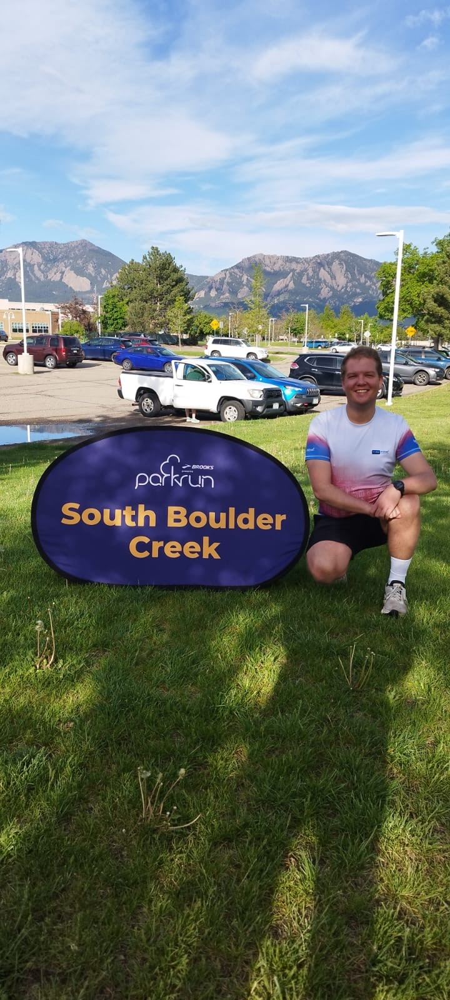
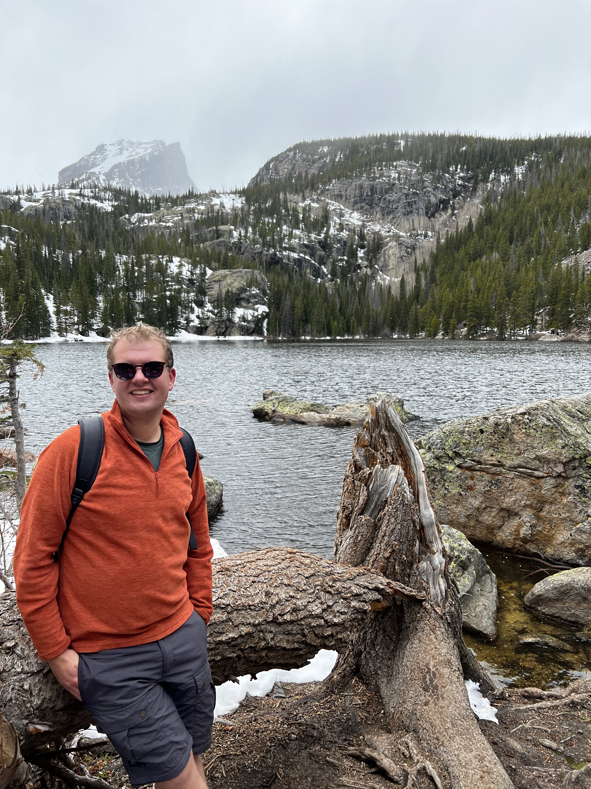
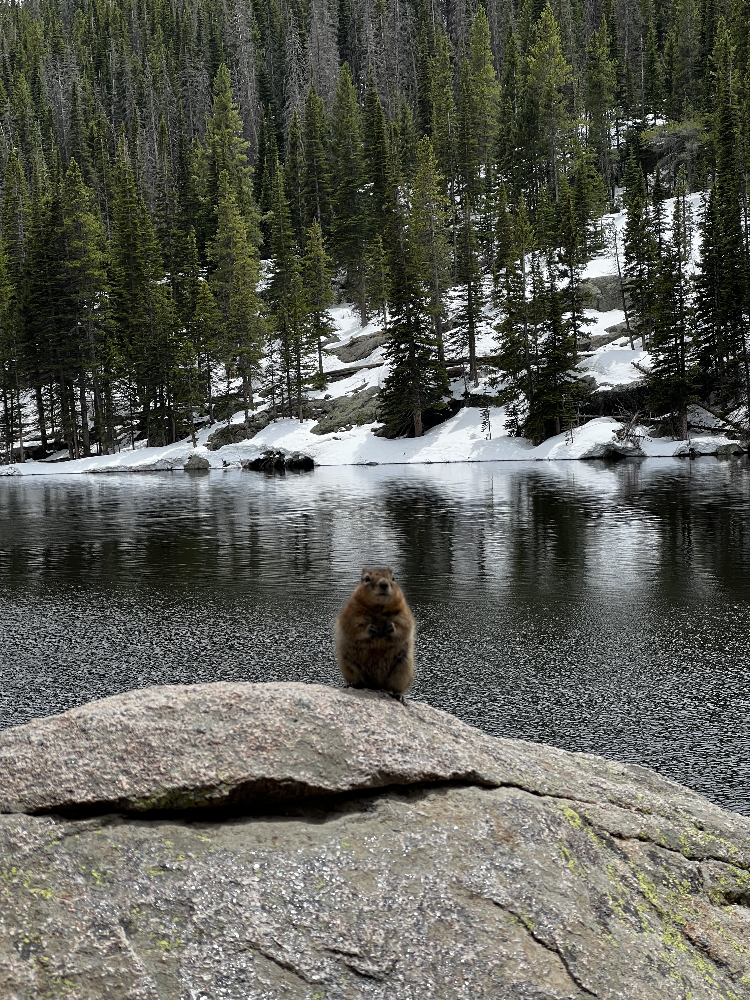
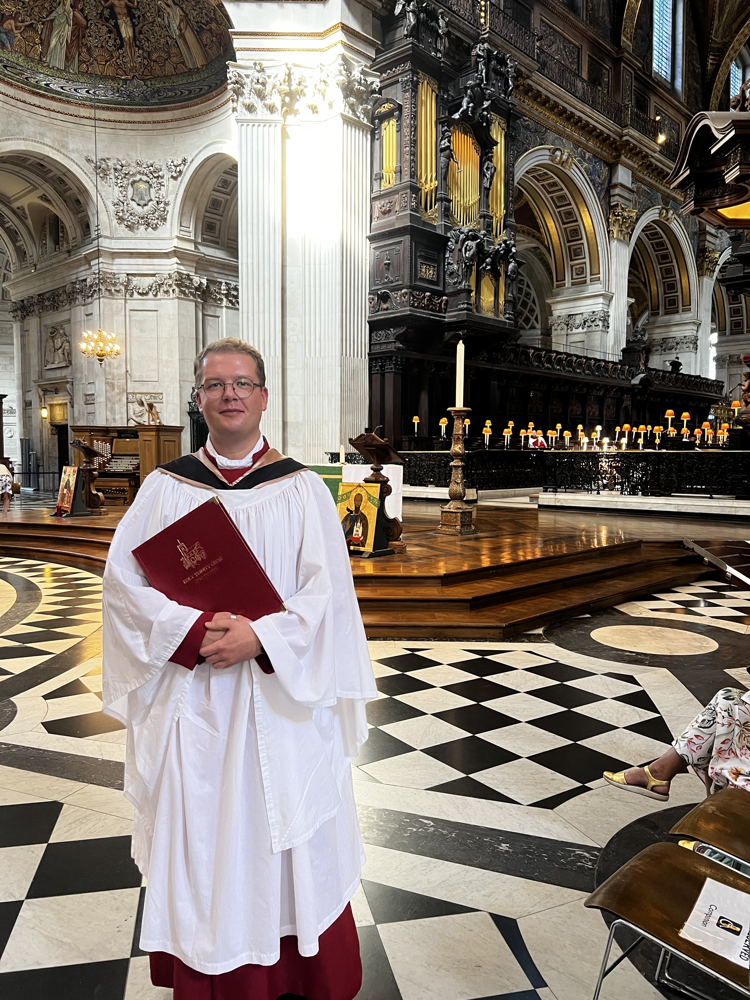

Back to Blog
20th May 2025
You may have already seen my entry on my participation in the SIAM DS25 conference in Denver, CO. Having travelled that far, it seemed almost wasteful not to spend a day or two exploring the area and doing some of the things I enjoy. This prompted me to write a few words about the things I enjoy doing outside of academia.
Some of my musician friends often comment on the fact that touring often does not allow them to see the places they visit. Indeed, the academic visits are quite similar in that nature, yet I often attempt to add one or two days to my visit to actually see the place in which I am. Conference schedules are usually jam-packed, often starting before 9am and finishing after 6pm, essentially leaving space only for dining. Adding the tiredness factor to it all, one is unable to see whatever venue they find themselves in.
When visiting Newcastle last year, I made my travel there (with my colleagues and friends) an exploratory visit, stopping in Lichfield and York. Two years ago, I followed on from my conference visit to Portland with a road trip down the Pacific coast. This year, I decided to stay in Denver for the weekend following my conference (and workshop) and explore the nature in the are.
This blog post is not meant to be my diary, talking about my day(s) off in Denver. I hope to also give you a brief overview of my non-mathematical activities (which are largely portrayed by my day off in Denver).
So first, what do I do when I am not at the University? Well, during the pandemic that my levels of activity reached the all-time low. Loosing my routine, staying with my parents for a prolonged time (for the first time in 8 years) made me reach rather worrying health levels. I started to fix that by doing lots of walks and engaging with the Couch to 5k running programme. And it worked! Soon enough running and walking were some of the very few forms of acceptable social activity, and so they became an important part of my daily life. Running has since often featured in my activity diary, dropping down during my PhD thesis write up, and picking up again after I moved to Guildford.
It was also the move to Guildford that encouraged me to start taking part in Parkruns -- free, timed 5k runs happening every Saturday morning around the world. Naturally, the Guildford Parkrun serves me as my "home" run at the moment, but I try to take part in them whenever travelling. Over the last few months, I have also utilised the Parkruns as a training for the half marathon. And lo and behold, I managed to run my very first half marathon in Poznań in April this year.
Parkruns are not commonly known in the US, yet I managed to find one in Boulder, about 30 mins drive away from Denver. It was not an easy challenge to organise, but on the Saturday after the conference, I was there at 8 am, ready to tick off another Parkrun location. There is one thing I did not take into account -- Denver is referred to as the "Mile High City", aka located a mile above the sea level. I felt that after about 1 km of my running -- I struggled to catch a breath, my mouth was dry, I began to feel nauseous. I still managed to finish the run, but it certainly was one of my slower Parkruns and not one I will remember too fondly. But here is one more perk of doing the Parkrun -- I have met many great local runners, but I also managed to convince one of the conference participants to come and join me (despite the ungodly hour at which we had to leave Denver).
Following the run, we got to see the lovely area near Boulder, in particular the Rocky Mountain National Park. We were very quickly reminded that we reached 3000 m above the sea level, when both of us were out of breath on the first climb up. Despite it being May, we had to go through the snow up on the top, but the views were well worth it! It still amazes me, however, how most places in the US are predominantly accessible by cars... It has it's perks, but some charm of the park was lost due to the busy road...
And so, we have running, and hiking... Anything else? Well, yes! While it was not in Colorado, I am in general a keen singer, singing in some of the local choirs in Guildford. Signing has been a major part of my free time since moving to the UK, allowed me to learn a lot about music, liturgy and spirituality. I must also highlight that it kept me sane during the PhD thesis write up.
It's easy to become "too busy". But I find with time that I cannot afford to be too busy! As soon as I stop running (or going to the gym or for swims), or stop singing or anything else I do outside of academia, I become a lot less productive at work as well. Hence, I choose to never stop!




σβ
Last updated: 18th November 2025
Back to Blog